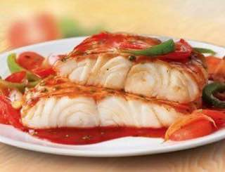
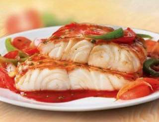

Рёбрышки в духовке
Пастрома
Котлеты
Курочка в кляре

Запечёное куриное филе
Рыбные котлетки в кляре
Стейк лосося
Запечёная скумбрия
Рыба в томатном соусе
Рыбное суфле
Ингредиенты к рецепту:
ребра свиные — 800 г
пюре фруктовое (Можно использовать пюре для детского питания) — 80 г
кетчуп — 80 г
сахар коричневый — 3 ст. л.
лимон (выжать сок) — 1/2 шт
соевый соус — 2-3 ст. л.
перец черный (молотый) — 1/2 ч. л.
паприка сладкая — 1/2 ч. л.
чеснок (сухой, в порошке) — 1/2 ч. л.
корица (молотая) — 1/2 ч. л.
Приготовление блюда по рецепту:
Шаг 1. Смешайте все ингредиенты (кроме мяса, конечно) в подходящей по размеру посуде.
Шаг 2. Ребрышки разрежьте так, чтобы на порцию приходилось по одному ребру. Если куски крупные и вы будете готовить мясо в духовке, можно предварительно отварить их в течение 15-30 минут. Положите мясо в соус, хорошо обмажьте каждый кусок и уберите в холодное место минимум на 30 минут для маринования.
Шаг 3. Выложите ребра на противень, накройте фольгой и запекайте от одного часа до полутора при 220 С. если мясо выделит слишком много сока, слейте его.
Шаг 4. Оставшимся соусом смазывайте ребра каждые 20-30 минут. Через 40 минут фольгу снять и запечь мясо до румяности.
Шаг 5. Если соус останется, сварите его остатки на медленном огне, пока сахар полностью не растворится, и подавайте отдельно для тех, кто любит рёбрышки с двойной порцией соуса.
Ингредиенты к рецепту:
мясо (Карбонат, свинина от 1.200 до 1500 гр.) — 1200 г
вода (для засолки) — 1 л
соль (для засолки) — 1 ст. л.
паприка сладкая (кусочками) — 1 ст. л.
специи (итальянские травы) — 1 ч. л.
розмарин (плюс одна веточка свежего розмарина) — 1 ч. л.
горчица (французская в зернах) — 1 ст. л.
мед (или сахар) — 1 ст. л.
уксус (уксус бальзамический или яблочный или вино белое) — 1 ст. л.
масло оливковое — 3 ст. л.
тимьян (по желанию) — 0.5 ч. л.
Приготовление блюда по рецепту:
Шаг 1. Сразу хочу отметить, рецепт универсальный и для других видов мяса. Филе курицы, индейки и говядины - тоже получается отличный результат.
Шаг 2. Замочить мясо (карбонат корейка или шейная часть) на ночь в солевом растворе 1 литр воды и 1 ст. л соли. Если надо быстро приготовить, можно мясо не замачивать.
Шаг 3. Берите шприц и делайте укольчики мясу, либо солевым раствором, либо соевым соусом.
Шаг 4. Смешиваем сухие приправы (можно немного потолочь в ступке).
Шаг 5. Смешиваем жидкие компоненты. Горчица, мед, белый бальзамический уксус или яблочный уксус или белое сухое вино и оливковое масло. Перемешиваем. Соединяем с сухими компонентами.
Шаг 6. Перемешиваем соус и обмазываем мясо со всех сторон.
Шаг 7. Сверху выкладываем веточку розмарина.
Шаг 8. Заворачиваем мясо в пергаментную бумагу и фольгу. Помещаем в заранее разогретую духовку до 230 гр. На 20 минут, не более.
Шаг 9. Выключаем полностью духовку и оставляем мясо в ней до полного остывания.
Грибы нарезаем четвертинками.
Ингредиенты к рецепту:
1 кг мяса (полужирная свинина + говядина в разных пропорциях, напимер: 1/3 говядины, 2/3 свинины)
2 крупные луковицы
1 яйцо
2 горбушки вчерашнего хлеба (нужны только мякиши)
1 ч.л. с небольшим верхом соли
1/3 ч.л. свежемолотого перца
растительное масло для жарки (5-6 ст.л.)
мука для панировки (1 стакан)
Приготовление блюда по рецепту:
Шаг 1. Хлебный мякиш (без корочки) разобрать на волокна, залить половиной стакана воды, замочить на 5 минут. Вода должна хорошо размочить хлебушек.
Шаг 2. Лук мелко измельчить.
Шаг 3. Мясо пропустить через мясорубку на крупной решетке.
Добавить хлебный мякиш (вместе с водой), яйцо, лук.
Шаг 4. Посолить (на 1 кг мяса 1 ч.л. соли с верхом), поперчить (чуть меньше 1/3 ч.л. свежемолотого перца).
Шаг 5. Фарш хорошенько перемешать. Затем рукой, смоченной в воде, отрываем комочки фарша величиной с котлету и с расстояния 20 см бросаем обратно в миску, разбиваем таким образом фарш минут 10, пока он не станет эластичным, однородным, и будет держаться одной массой. Котлеты с фарша, вымешанного таким способом, никогда не разваливаются при жарке на сковороде!
Шаг 6. Даем фаршу отдохнуть 10-15 минут. В это время мясные кусочки напитываются (маринуются) луковым соком, солью и перцем.
Шаг 7. Мокрыми руками формируем котлеты и перед обжаркой обваливаем в муке.
Шаг 8. Жарим котлеты на хорошо прогретой сковороде, когда масло уже начало изрядно шкворчать. В этот момент от высокой температуры образуется корочка, которая удерживает все соки внутри. Если выложить котлеты на плохо прогретую сковороду они начнут прилипать к сковороде и могут из-за этого развалиться.
Шаг 9. Начинаем жарить БЕЗ крышки по 3 минут на каждой стороне, затем еще раз переворачиваем, должна образоваться корочка, затем уменьшаем огонь и жарим еще по 3 минуты: доводить котлеты до готовности можно уже под крышкой, на среднем огне.
Шаг 10. Подавать с жареной картошечкой и огурчиком!
Ингредиенты к рецепту:
400 г куриного филе
130 г крахмала
100 г муки
2 шт. яиц
1 ч. л. лимонного сока
1 ч. л. сахара
1 ч. л. красного сладкого перца
0.25 ч. л. красного острого перца
500 мл растительного масла
Приготовление блюда по рецепту:
Шаг 1. Куриную грудинку нарезаем кубиками, солим, добавляем сладкую паприку. Делаем кляр. Для этого смешиваем: 100 грамм муки, 100 грамм крахмала и 75 миллилитров воды, замешиваемым до однородной массы - она должна быть как жидкое тесто. Яйцо взбиваем в отдельной глубокой емкости.
Шаг 2. Делаем фритюр: в кастрюлю вливаем подсолнечное масло и сильно разогреваем. Окунаем кусочки курицы в яйцо, потом в кляр и отправляем в кипящее масло. Обжариваем 3 минуты.
Шаг 3. Для крахмального соуса в 100 мл воды разводим оставшийся крахмал. Смешиваем с лимонным соком и красным перцем, доводим до кипения — соус готов.
Ингредиенты к рецепту:
1 куриное филе
1 веточка розмарина
2 веточки мяты
200 г йогурта
½ лимона
2 ст. л. оливкового масла
по вкусу соль и перец
Приготовление блюда по рецепту:
Шаг 1. Подготовьте ингредиенты для приготовления куриного филе в духовке с соусом из йогурта. Разогрейте духовку до 180 градусов.
Шаг 2. Куриное филе зачистите от лишнего жира и пленок. Положите его на лист пергамента, выложите по бокам дольки лимона, а сверху – веточку розмарина. Полейте 1 ст. л. оливкового масла.
Шаг 3. Посолите, поперчите и закрутите в конверт в виде конфетки. Запекайте в духовке 25 минут при температуре 180 градусов.
Шаг 4. Помойте 2 веточки мяты и оборвите листочки. Очень мелко их порубите.
Шаг 5. В мисочку с 200 г натурального йогурта добавьте мяту, 1 ст. л. оливкового масла и немного соли. Хорошо перемешайте соус.
Шаг 6. Готовое куриное филе разверните и полейте соусом из йогурта с мятой.
Ингредиенты к рецепту:
2 филе Минтая
1,5 стакана панировочных сухарей
150 г муки
1 шт. яйцо
1 шт. желток
200 мл натурального йогурта
10 веточек петрушки (или укропа)
1 ст. л. лимонного сока
по вкусу соль и перец
Приготовление блюда по рецепту:
Шаг 1. Филе минтая (2 шт.) пропустите через мясорубку.
Шаг 2. Рыбный фарш посолите и поперчите. Добавьте 2 ст.л. панировочных сухарей и 1 желток. Вымешайте фарш до однородности и немного отбейте руками.
Шаг 3. Сформируйте аккуратные рыбные палочки и сделайте двойную панировку. Сначала обваляйте в муке (150 г), затем в яйце (1 шт.) и оставшихся сухарях. Снова окуните в яйцо и обваляйте в сухарях.
Шаг 4. Выложите палочки на противень, застеленный пергаментом, и выпекайте в духовке с температурой 180 градусов в течение 20 минут до образования румяной корочки.
Шаг 5. Подавайте с йогуртовым соусом. Измельчите зелень петрушки/укропа (10 веточек) и смешайте с нейтральным йогуртом (200 мл). Посолите по вкусу и добавьте сок лимона (1 ст. л.).
Ингредиенты к рецепту:
1 шт. Лосось (стейк, 200-300 грамм)
½ шт. Лимон
1 ст. л. Подсолнечное масло (или оливковое)
3-5 шт. Клубника (для подачи, по желанию)
1 щепотка Розовый перец
по вкусу Соль
Для соуса:
2 шт. Яичный желток
1-2 ст. л. Сок лимона
50 г Сливочное масло
по вкусу Соль и перец
Приготовление блюда по рецепту:
Шаг 1. Стейк лосося (200-300 г) обсушите бумажным полотенцем и положите на противень для запекания, покрытый пергаментом. С двух сторон притрусите стейк солью и щепоткой розового перца. Сбрызните соком половины лимона и 1 ст. л. подсолнечного или оливкового масла. Выставьте температуру 180 градусов и запекайте 10-15 минут в зависимости от толщины стейка.
Шаг 2. Тем временем приготовьте соус голландез. Для этого в огнеупорной мисочке соедините 2 яичных желтка с 1-2 ст. л. сока лимона и поставьте на паровую баню. При постоянном перемешивании венчиком слегка прогрейте желтки с лимонным соком.
Шаг 3. Сливочное масло (50 г) нарежьте маленькими кубиками и разделите примерно на три части весь объем. Начинайте добавлять масло и помешивать соус, пока оно полностью не растопится.
Шаг 4. Затем добавляйте вторую часть масла и снова помешивайте. Если соус слишком горячий, то снимайте миску с паровой бани, чтобы он не перегрелся и не свернулся. Так часто бывает, потому будьте осторожны и не спешите. Когда полностью разошлась вторая порция масла – добавляйте третью и снова перемешивайте. Соус должен слегка загустеть. Снимайте с огня до подачи блюда.
Шаг 5. Хорошо помойте 3-5 шт. клубники. Затем нарежьте небольшими кусочками.
Шаг 6. Готовый стейк лосося полейте соусом и подавайте с клубникой. А можете и опустить этот шаг, все равно вкус будет божественным.
Ингредиенты к рецепту:
1 шт. Скумбрия
1/2 шт. Апельсин
10 г Корень имбиря
Соль и перец по вкусу
Приготовление блюда по рецепту:
Шаг 1. Духовку разогрейте до 180 градусов. Скумбрию разморозьте, удалите жабры и внутренности.
Шаг 2. С апельсина срежьте цедру и мелко порежьте, а затем выдавите сок. Имбирь очистите, мелко порежьте или потрите на терке.
Шаг 3. Скумбрию натрите солью, перцем, апельсиновой цедрой и тертым имбирем, выложите в плоскую емкость и залейте соком апельсина. Оставьте на 10 минут.
Шаг 4. Выложите рыбу на противень, застеленный пергаментом, и запекайте в течение 15 минут. Подавайте с отварным картофелем или картофельным пюре.
Ингредиенты к рецепту:
Рыба (белая или красная (филе)) — 400 г
Сок лимонный — 1 ст. л.
Мука пшеничная / Мука — 2 ст. л.
Соль — 1 ч. л.
Базилик (сухой) — 1/2 ч. л.
Эстрагон (сухой) — 1/4 ч. л.
Майоран (сухой) — 1/4 ч. л.
Масло растительное — 2 ст. л.
Соевый соус — 2 ст. л.
Помидор — 300 г
Крахмал — 1 ч. л.
Гранат (сироп) — 1 ст. л.
Масло растительное — 1 ст. л.
Чеснок — 2 зуб.
Перец болгарский (красный) — 1/2 шт
Вода — 1/2 стак.
Приготовление блюда по рецепту:
Шаг 1. Берём любую рыбу: белую или красную, главное - не костлявую, чистим, разделываем на филе с кожей. Далее режем на небольшие кусочки. Посыпаем солью, поливаем соком лимона и оставляем мариноваться на 5 минут.
Шаг 2. Для панировки берём муку и смешиваем с травами: базилик, майоран, эстрагон. Можете использовать травы на свой вкус.
Панируем рыбу в муке с травами, кладём на разогретую сковороду с маслом.
Шаг 3. Обжариваем рыбу на среднем огне до румяной корочки с обеих сторон. Убираем жаренную рыбу на тарелку.
Шаг 4. Готовим соус.
Помидоры моем и мелко режем.
Шаг 5. На сковороду наливаем растительное масло, кладём помидоры и обжариваем, помешивая 5 минут.
Шаг 6. Добавляем гранатовый сироп и соевый соус. Перемешиваем.
Шаг 7. Крахмал заливаем ледяной водой, размешиваем.
Шаг 8. Наливаем раствор крахмала к помидорам, завариваем до загустения.
Шаг 9. Добавляем мелкопорезанный болгарский перец. Тушим 1 минуту.
Шаг 10. Кладём мелкорубленный чеснок, перемешиваем.
Шаг 11. В соус кладём жаренную рыбу, отключаем огонь. Даём рыбе настояться 5 минут в соусе.
Шаг 12. Эта рыба в соусе вкусна, как горячая, так и холодная.
Ингредиенты к рецепту:
Рыба — 500 г
Желток яичный — 2 шт
Белок яичный — 2 шт
Сметана — 2 ст. л.
Соевый соус — 1 ч. л.
Приготовление блюда по рецепту:
Шаг 1. Рыбу измельчить при помощи погружного блендера. Рыбу можно взять любую.
Шаг 2. Добавить соевый соус.
Шаг 3. Желтки взбить.
Шаг 4. Добавить сметану, ещё раз взбить.
Шаг 5. Отдельно взбить белки с щепоткой соли до жестких пиков.
Шаг 6. Аккуратно ввести в рыбную массу взбитые белки. Перемешать.
Шаг 7. Выложить в жаропрочную форму. Поставить в противень, в противень налить горячей воды.
Шаг 8. Выпекать в разогретой до 180 градусов духовке 30 минут.
Yummy day
рецепты для всей семьи
Рёбрышки в духовке
Пастрома
Котлеты
Курочка в кляре
Запечёное куриное филе
Рыбные котлетки в кляре
Стейк лосося
Запечёная скумбрия
Рыба в томатном соусе
Рыбное суфле
P.S. With love to you